Nginx · 核心原理图谱
事件驱动 master-worker 反向代理:1 master 管控 + N 单线程 worker,每 worker 一条 epoll 循环非阻塞多路复用海量连接。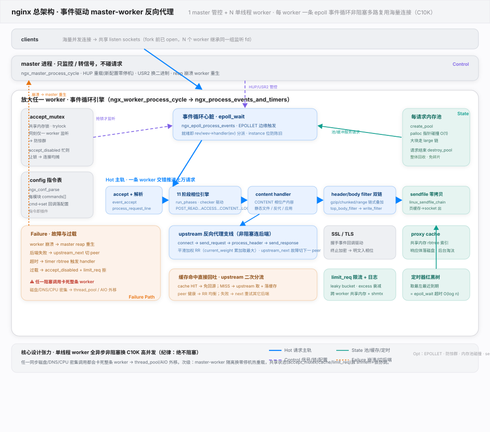
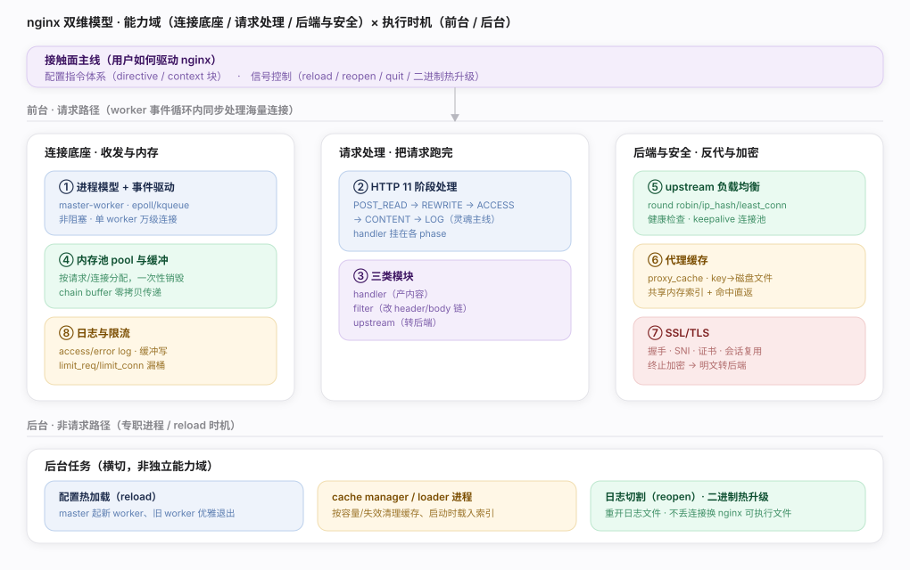
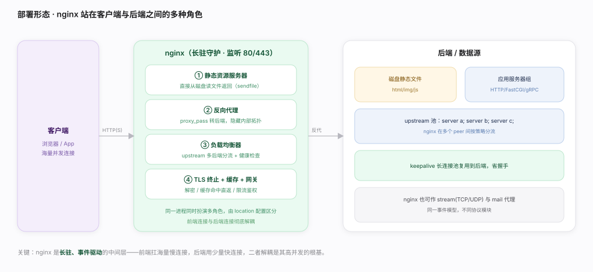
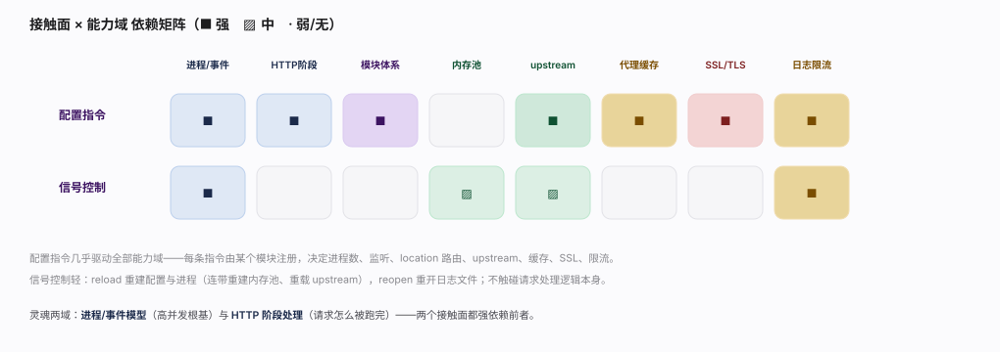
aio threads）。| 维度 | 数据库（Doris/DuckDB） | nginx |
|---|---|---|
| 用户接触面 | SQL 语句族（DDL/DML/DQL/DCL） | 配置指令 + 信号——没有"查询语言"，行为全由 nginx.conf 声明 |
| 核心资源 | 数据（表/行/列） | 连接与请求——把海量并发连接高效地收、处理、转发 |
| 并发模型 | 线程池 + 查询并行 | master-worker 多进程 + 单线程事件循环（非阻塞 epoll） |
| 状态 | 持久化数据 + 事务 | 基本无状态——请求处理完即释放；缓存/限流用共享内存 |
| "改配置" | ALTER + 事务 | reload 信号：master 起新 worker、旧 worker 优雅退出 |
| 层 | 支撑能力域 | 一句话职责 | 内核锚点 |
|---|---|---|---|
| 底座 | 进程与事件模型 | master-worker + epoll 非阻塞事件循环 | os/unix/ngx_process_cycle.c:74、event/ngx_event.c:195 |
| 底座 | 内存池与缓冲 | 按请求/连接分配、一次性释放；chain buffer | core/ngx_palloc.c:19、core/ngx_buf.c:13 |
| 底座 | 日志与限流 | access/error 日志缓冲写、漏桶限流 | http/modules/ngx_http_log_module.c:254、limit_req_module.c:405 |
| 请求 | HTTP 阶段处理 | 11 phase 请求生命周期（灵魂） | http/ngx_http_core_module.h:110、core_module.c:884 |
| 请求 | 模块体系 | handler / filter / upstream 三类模块 | http/ngx_http.c:564、core/ngx_module.h:227 |
| 后端 | upstream 负载均衡 | 多后端分流、健康检查、连接复用 | http/ngx_http_upstream_round_robin.c:811 |
| 后端 | 代理缓存 | proxy_cache key→磁盘 + 共享内存索引 | http/ngx_http_file_cache.c:265 |
| 后端 | SSL/TLS | 握手、SNI、证书、会话复用、终止加密 | event/ngx_event_openssl.c:2201 |
| # | 贯穿声明 | 含义 |
|---|---|---|
| 1 | 一切行为由配置指令声明，一切指令由模块注册 | nginx 无查询语言；nginx.conf 每条 directive 对应某模块解析回调，决定其在请求流水线的挂载点与参数 |
| 2 | worker 单线程事件循环 + 非阻塞是高并发根基 | 一个 worker 一线程经 epoll 管上万连接，绝不为单连接阻塞——磁盘/后端/DNS 等阻塞点全转事件回调 |
| 3 | 请求处理 = 11 阶段 handler + filter 输出链 | 请求经 POST_READ→…→CONTENT→LOG 十一阶段，content 产出经 header/body filter 链逐级加工发出——这是理解一切 HTTP 模块的骨架 |
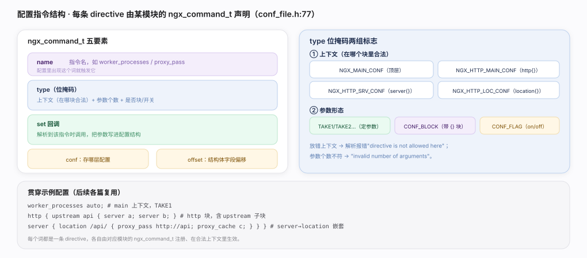
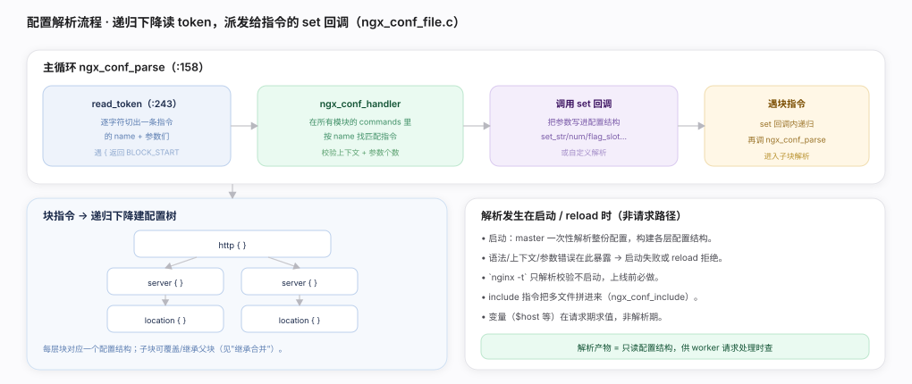
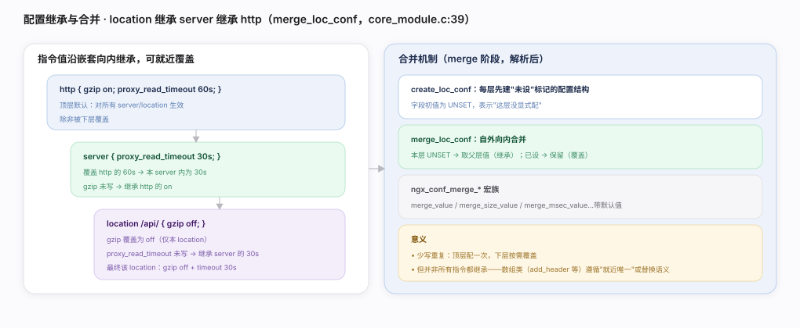
nginx.conf 的配置指令（directive）声明 nginx 的一切静态行为。每条指令由某模块的 ngx_command_t 注册，在合法上下文里由 set 回调写进配置结构。它是模块体系的入口，被几乎所有支撑能力域依赖；与另一条接触面"信号控制"分工——配置声明静态行为、信号驱动运维动作。核实基准：官方源码 nginx/src（commit 9e32c636，nginx 1.31.3）。ngx_command_t（core/ngx_conf_file.h:77，name + 上下文/参数位掩码 type + set 回调）注册，ngx_conf_parse（ngx_conf_file.c:158）递归下降经 ngx_conf_read_token（:503）读 token 后由 ngx_conf_handler（:356）校验上下文并派发给 set 回调写入配置结构，值沿 http→server→location 经 ngx_http_core_merge_loc_conf（ngx_http_core_module.c:3757）继承覆盖——启动/reload 期一次性解析成只读配置结构供 worker 查，nginx -t 是上线前的安全闸。nginx -t：改配置后先测试语法与上下文，再 reload。include：拆分大配置（ngx_conf_include :821），按 vhost/模块组织。proxy_pass 只在 location 有意义，放 http 报 "not allowed here"（:482）；先查指令的合法上下文。merge_* 宏继承覆盖，但 add_header 等在子块出现会整体替换父层。$host 等变量是请求期求值的，配置解析期只记表达式。nginx -t 习惯。| 失败/边界场景 | 处理机制 | 锚点 |
|---|---|---|
| 上下文错误 | 指令在非法块（如 proxy_pass 放 http 顶层）报 "directive is not allowed here"、启动/reload 失败 | ngx_conf_handler:356 → :482 |
| 参数个数错误 | TAKE1 却给两参数等，报 "invalid number of arguments" | :495 |
| 块未闭合 | { 无匹配 } 时读到 EOF 报 "unexpected end of file, expecting }" | ngx_conf_read_token |
| reload 时配置错 | 新配置解析失败时 master 保留旧配置继续服务、不切换（旧 worker 不退）——故 reload 安全，先 nginx -t | — |
| include 通配无匹配 | include *.conf 匹配 0 个文件不报错（除非具体文件名），易漏配 | — |
| 上下文 | 典型指令 | 作用 | 锚点 |
|---|---|---|---|
| main（顶层） | worker_processes、user、pid | 进程与全局 | core/ngx_conf_file.c:356 |
| events | worker_connections、use epoll | 事件模型 | event/ngx_event.c |
| http | gzip、log_format、upstream{} | HTTP 全局默认 | http/ngx_http.c:564 |
| server | listen、server_name、ssl_certificate | 虚拟主机 | http/ngx_http.c:626 |
| location | proxy_pass、root、limit_req | 按 URI 路径的处理 | http/ngx_http_core_module.c:3757 |
![信号表]()
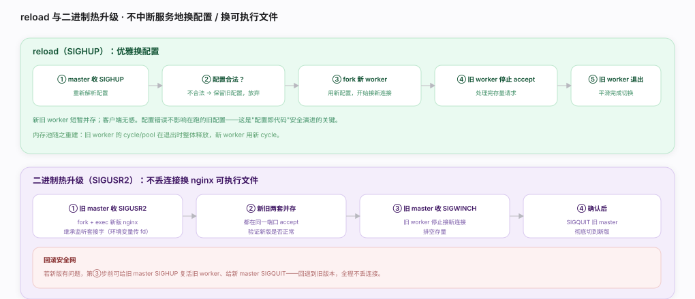
nginx/src（commit 9e32c636，nginx 1.31.3）。ngx_signal_handler（os/unix/ngx_process.c:319）只置 sig_atomic_t 标志位（ngx_reconfigure/ngx_reopen/ngx_quit/ngx_change_binary），由 master 主循环 ngx_master_process_cycle（ngx_process_cycle.c:74）轮询后执行——reload（:211）与热升级（:262 → ngx_exec_new_binary :265）都靠"新旧 worker/实例短暂并存 + 旧者排空存量再退出"实现零中断切换，配置错误或新版异常都可安全回滚而不丢连接。nginx -s reload（先 nginx -t），不要 stop+start（会中断）。nginx -s reopen，避免丢日志。worker_shutdown_timeout 兜底。ngx_reopen_files :257）。ngx_signal_handler（os/unix/ngx_process.c:319）只置标志位、由主循环执行；动作是异步触发的。| 失败/边界场景 | 处理机制 | 锚点 |
|---|---|---|
| reload 配置非法 | 新 cycle 解析失败时 master 释放新 cycle、保留旧 cycle 与旧 worker 继续服务——reload 天然安全，先 nginx -t | — |
| 旧 worker 排空超时 | 优雅退出的旧 worker 存量请求迟迟不完时，受 worker_shutdown_timeout 约束到点强杀，避免旧进程僵留 | — |
| 热升级新版起不来 | exec 失败时旧 master 继续持有监听、照常服务，热升级中止不影响线上 | ngx_exec_new_binary:265 |
| PID 文件冲突 | 热升级期旧 master 把 pid 改名 .oldbin、新 master 写新 pid；回滚需还原，运维脚本要处理两个 pid | — |
| 信号丢失 | sig_atomic_t 标志幂等置位，短时多次同信号只触发一次动作——不累积重复 reload | — |
| 命令 | 信号 | 标志位 | 优雅 | 用途 | 锚点 |
|---|---|---|---|---|---|
| reload | SIGHUP | ngx_reconfigure | ✓ | 换配置不中断 | os/unix/ngx_process_cycle.c:211 |
| reopen | SIGUSR1 | ngx_reopen | ✓ | 日志切割后重开文件 | os/unix/ngx_process_cycle.c:254 |
| quit | SIGQUIT | ngx_quit | ✓ | 优雅停机 | os/unix/ngx_process_cycle.c:203 |
| stop | SIGTERM | ngx_terminate | ✗ | 立即停机 | os/unix/ngx_process_cycle.c:181 |
| （热升级） | SIGUSR2 | ngx_change_binary | ✓ | 换 nginx 可执行文件 | os/unix/ngx_process_cycle.c:262 |
| （停 accept） | SIGWINCH | ngx_noaccept | ✓ | 旧实例排空连接 | os/unix/ngx_process_cycle.c:268 |
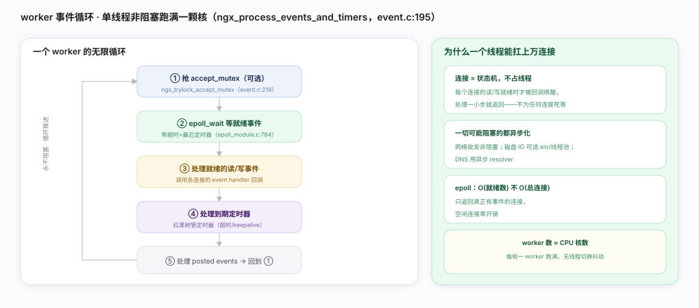
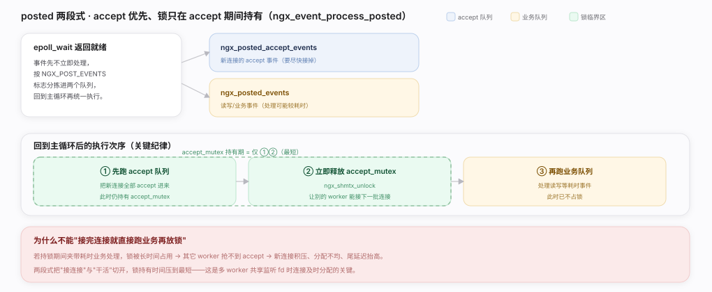
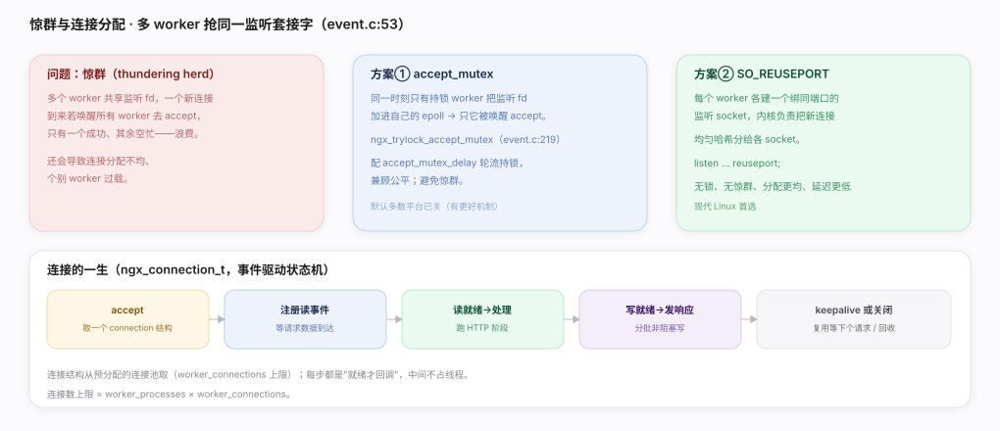
nginx/src（commit 9e32c636，nginx 1.31.3）。ngx_process_cycle.c:74/336），每个 worker 用单线程跑 ngx_process_events_and_timers（event/ngx_event.c:195）无限循环——epoll_wait 拿就绪事件、先接 accept 事件并立即放锁、再跑业务 posted 事件、最后处理定时器——连接是不占线程的状态机、一切阻塞操作都异步化，故一个线程可管上万连接；多 worker 抢连接用 accept_mutex / EPOLLEXCLUSIVE / SO_REUSEPORT 避免惊群，并以 ngx_accept_disabled 做跨 worker 软均衡。worker_processes auto：通常设为 CPU 核数，跑满多核。worker_connections：单 worker 连接上限；总容量 = worker 数 × 它。use epoll（Linux 默认）/ multi_accept on：一次事件循环接多个连接（一次 accept 到 EAGAIN）。listen ... reuseport：现代 Linux 用它替代 accept_mutex，降尾延迟、去锁竞争。accept_mutex off（默认新版即 off）：配 reuseport 或 EPOLLEXCLUSIVE 时无需软锁。aio threads 仅把阻塞磁盘 IO 卸到线程池，事件主循环仍单线程。| 失败/边界场景 | 处理机制 | 锚点 |
|---|---|---|
| 抢锁失败 | ngx_accept_mutex_held=0 分支，本轮不监听新连接、仅处理已有连接读写与定时器——不空转、不惊群 | ngx_trylock_accept_mutex event/ngx_event.c:228 |
| accept 出错 | EAGAIN 表就绪连接取完（正常收尾）；EMFILE/ENFILE（fd 耗尽）记 error 并短暂停 accept，靠预留 files 降级避免僵死 | ngx_event_accept |
| worker 崩溃 | master 经 SIGCHLD 感知、回收并按需重启新 worker，单 worker 故障不影响其余 worker 连接 | ngx_reap_children os/unix/ngx_process_cycle.c:534 |
| 惊群残留 | 即使用 EPOLLEXCLUSIVE，跨多 listen socket 仍可能多 worker 唤醒，用 ngx_accept_disabled 做二次均衡兜底 | — |
| 组件 | 职责 | 锚点 |
|---|---|---|
| ngx_master_process_cycle | master 管控循环（轮询信号标志） | os/unix/ngx_process_cycle.c:74 |
| ngx_start_worker_processes | fork 出 N 个 worker | os/unix/ngx_process_cycle.c:336 |
| ngx_worker_process_cycle | worker 主体循环 | os/unix/ngx_process_cycle.c:699 |
| ngx_worker_process_init | worker 初始化（绑核/降权/装事件） | os/unix/ngx_process_cycle.c:753 |
| ngx_reap_children | 回收并重启崩溃 worker | os/unix/ngx_process_cycle.c:534 |
| ngx_process_events_and_timers | 事件循环核心 | event/ngx_event.c:195 |
| ngx_epoll_process_events | epoll 具体实现（含 epoll_wait） | event/modules/ngx_epoll_module.c:784 |
| ngx_event_accept | accept 连接 + 负载均衡阀 | event/ngx_event_accept.c:21 |
| ngx_trylock_accept_mutex | 惊群互斥抢锁 | event/ngx_event_accept.c:345 |
| ngx_event_process_posted | 处理延迟事件队列 | event/ngx_event_posted.c:19 |
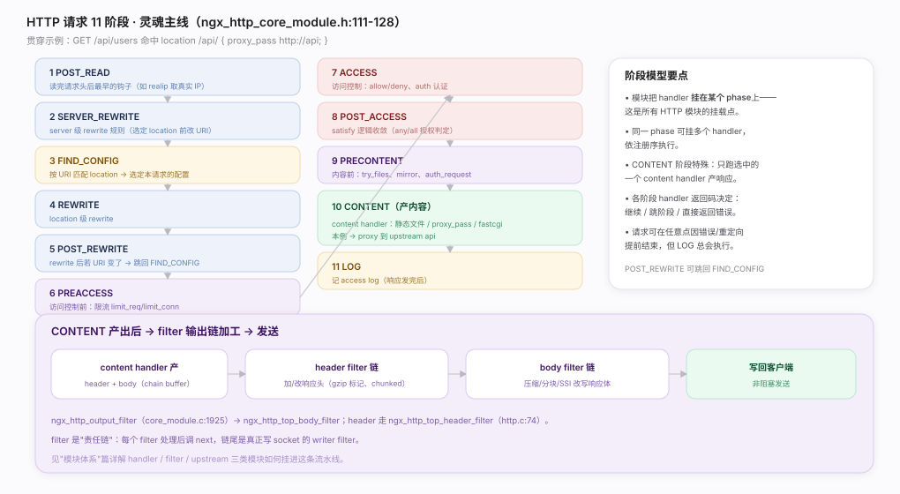
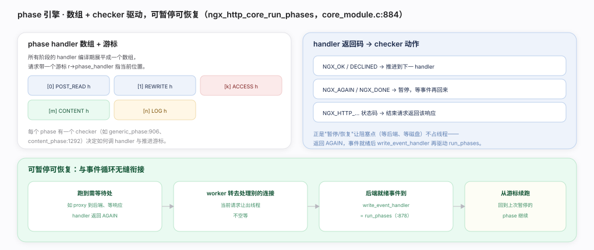
nginx/src（commit 9e32c636，nginx 1.31.3）。ngx_http_core_module.h:110-128）：模块把 handler 挂在对应阶段，ngx_http_core_run_phases（ngx_http_core_module.c:884）用展平的 handler 数组 + 游标 r->phase_handler + 各 phase 的 checker（generic/rewrite/find_config/access/content）驱动推进，handler 返回 AGAIN 即暂停让出线程、事件就绪后经 write_event_handler（:878）从游标续跑；CONTENT 产出的响应再经 header/body filter 链（ngx_http_output_filter，:1925）加工后非阻塞写回——这条阶段流水线是一切 HTTP 模块的挂载骨架。location 精确/前缀/正则匹配控制 FIND_CONFIG 选中的配置。try_files 在 PRECONTENT 优雅回退（找文件→目录→兜底后端）。uri_changes 上限保护但应避免。| 失败/边界场景 | 处理机制 | 锚点 |
|---|---|---|
| rewrite 死循环 | POST_REWRITE 每次跳回 FIND_CONFIG 自增 r->uri_changes，超上限（默认 10）返 500 "rewrite or internal redirection cycle" | — |
| 无 content handler | CONTENT 阶段无模块产内容时，末尾按默认返回 404/403、不悬挂 | ngx_http_core_content_phase:1292 |
| 鉴权失败 | ACCESS handler 返回 403/401，checker 直接 finalize、后续阶段不执行；satisfy any 任一通过即放行 | POST_ACCESS 判定 |
| 子请求/内部重定向 | 重置 r->phase_handler 从 server_rewrite 或指定 index 重跑，主/子请求各自独立走阶段 | :2563/:2696 sr->write_event_handler=run_phases |
| 客户端提前断开 | 写事件报错时 finalize 请求、回收连接，LOG 阶段仍会记录（若已到） | — |
| 阶段 | 典型模块/指令 | 作用 | 锚点 |
|---|---|---|---|
| POST_READ | realip | 取真实客户端 IP | http/ngx_http_core_module.h:111 |
| SERVER/location REWRITE | rewrite、return | URI 改写/重定向 | http/ngx_http_core_module.c:943 |
| FIND_CONFIG | （内建） | 匹配 location | http/ngx_http_core_module.c:970 |
| PREACCESS | limit_req、limit_conn | 限流 | http/modules/ngx_http_limit_req_module.c:1094 |
| ACCESS | allow/deny、auth_basic、auth_request | 鉴权 | http/ngx_http_core_module.c:1109 |
| PRECONTENT | try_files、mirror | 内容前处理 | http/ngx_http_core_module.h:123 |
| CONTENT | root/index（静态）、proxy_pass、fastcgi_pass | 产响应 | http/modules/ngx_http_static_module.c:289 |
| LOG | access_log | 记录 | http/modules/ngx_http_log_module.c:254 |
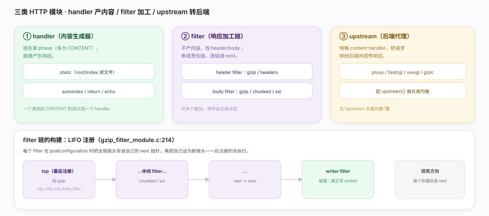
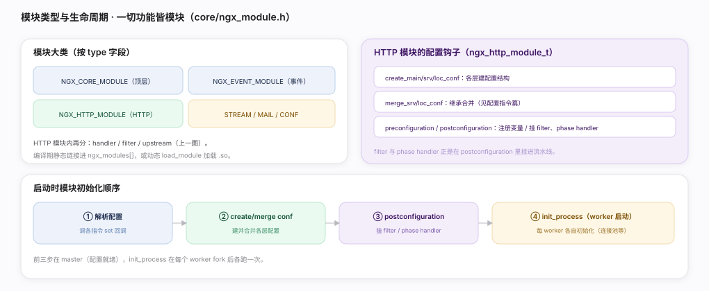
nginx/src（commit 9e32c636，nginx 1.31.3）。ngx_module_t，core/ngx_module.h:227）：handler 挂在 phase 上产内容（CONTENT 只选一个，如 static_module.c:289）、filter 以 LIFO 责任链逐级加工 header/body 后调 next（gzip_filter_module.c:1130-1134 注册、链尾 writer filter 写 socket）、upstream 作为特殊 content handler 转后端；模块按 core/event/http/stream/mail 分类经 ngx_preinit_modules（ngx_module.c:26）建序，再由 ngx_http_module_t（ngx_http_config.h:23）的 create/merge conf 与 pre/postconfiguration 钩子把配置结构、变量、filter 与 phase handler 注册进引擎——这套模块体系是配置指令的载体与 HTTP 阶段流水线的填充物。--with-* / --without-* 裁剪模块，减小体积。load_module 便于按需加载第三方模块。nginx -V 看编译进了哪些模块。| 失败/边界场景 | 处理机制 | 锚点 |
|---|---|---|
| 模块崩溃即 worker 崩溃 | 模块编进 worker 进程、无隔离沙箱；劣质第三方模块段错误令整 worker 崩溃，靠 master 重启兜底 | ngx_reap_children（见进程篇） |
| filter 顺序不可乱插 | filter 链在 postconfiguration 一次性按注册序建成 LIFO，运行期不可动态插队；排序须控编译顺序或注册时机 | — |
| handler 返回 DECLINED | content handler 返 NGX_DECLINED（我不处理）时 phase checker 继续找下一个或最终 404，不悬挂 | — |
| 动态模块 ABI 不匹配 | load_module 的 .so 须与主程序同版本、同编译选项，否则加载即报错拒绝启动——避免运行期崩溃 | — |
| 类型 | 挂载点 | 例子 | 锚点 |
|---|---|---|---|
| handler | phase handler 数组 | static、proxy、fastcgi | http/modules/ngx_http_static_module.c:289 |
| header filter | ngx_http_top_header_filter 链 | headers、gzip、not_modified | http/modules/ngx_http_gzip_filter_module.c:1130 |
| body filter | ngx_http_top_body_filter 链 | gzip、chunked、ssi、sub | http/modules/ngx_http_gzip_filter_module.c:1133 |
| writer（链尾） | write_filter（最先注册） | 实际写 socket | http/ngx_http_write_filter_module.c:366 |
| upstream | content handler + 负载均衡 | proxy_pass、grpc_pass | http/ngx_http_upstream.c:543 |
| 配置钩子 | ngx_http_module_t | create/merge/pre/postconfiguration | http/ngx_http_config.h:23 |
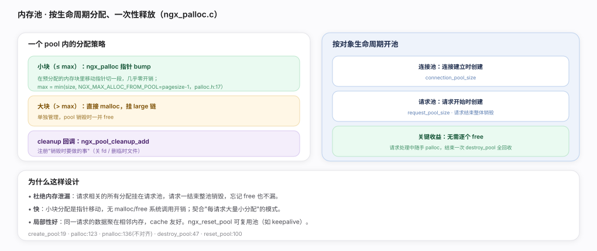
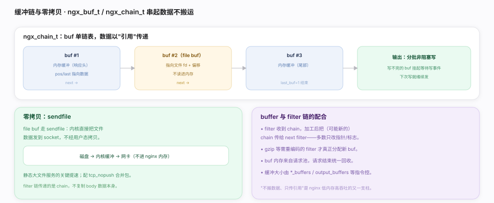
nginx/src（commit 9e32c636，nginx 1.31.3）。ngx_palloc 指针 bump palloc.c:123、大块 ngx_palloc_large malloc 挂链 :214、ngx_pool_cleanup_add 注册销毁回调 :312），请求相关分配挂请求池、请求结束一次 ngx_destroy_pool（:47）整体回收——杜绝泄漏且极快；数据用 ngx_chain_t（ngx_buf.h:61）缓冲链以引用传递、file buf 走 sendfile 零拷贝，filter 链多只传 chain 不复制 body——"按生命周期一次性释放"与"不搬数据只传引用"共同支撑 nginx 的低内存高吞吐。client_header_buffer_size / large_client_header_buffers：请求头缓冲大小。output_buffers、proxy_buffers：响应/代理缓冲，影响内存与吞吐。sendfile on + tcp_nopush on：静态文件零拷贝 + 合并包。ngx_palloc 分配，随请求结束自动回收；手动分配易泄漏。ngx_pool_cleanup_add 注册，否则 destroy_pool 不替你关。| 失败/边界场景 | 处理机制 | 锚点 |
|---|---|---|
| large 分配失败 | malloc 返 NULL 时向上返 NULL、调用方须判空；池不 OOM-kill，靠上层 finalize 请求 | ngx_palloc_large |
| cleanup 顺序 | 先按注册逆序跑所有 cleanup（如关临时文件 fd）再释放内存；未注册 cleanup 的裸 malloc fd 不会被替关，致泄漏 | ngx_destroy_pool:47 |
| 写缓冲背压 | 输出链一次写不完（socket 满）时 buf 挂 busy 链返 NGX_AGAIN，等写事件再回收已发部分——绝不阻塞 | ngx_chain_update_chains:185 |
| 请求头超缓冲 | 请求头超 large_client_header_buffers 报 414/400，不无限扩内存 | — |
| 跨 worker 数据不能进池 | pool 进程内随生命周期释放；跨 worker 状态（缓存索引/限流计数）必须放共享内存+slab，不能 palloc | core/ngx_slab.c |
| 组件 | 职责 | 锚点 |
|---|---|---|
| ngx_create_pool | 建池、算 max 阈值 | core/ngx_palloc.c:19 |
| ngx_palloc / ngx_pnalloc | 对齐 / 不对齐小块分配 | core/ngx_palloc.c:123/136 |
| ngx_palloc_small / block / large | 块内切分 / 加新块 / 大块 malloc | core/ngx_palloc.c:149/178/214 |
| ngx_destroy_pool / reset_pool | 整池释放（跑 cleanup）/ 复用 | core/ngx_palloc.c:47/100 |
| ngx_pool_cleanup_add | 注册销毁回调 | core/ngx_palloc.c:312 |
| ngx_buf_t / ngx_chain_t | 缓冲 / 缓冲链结构 | core/ngx_buf.h:18/61 |
| ngx_create_temp_buf / alloc_chain_link | 建内存 buf / 取链节点 | core/ngx_buf.c:13/48 |
| ngx_chain_add_copy / update_chains | 追加链 / busy↔free 回收 | core/ngx_buf.c:127/185 |
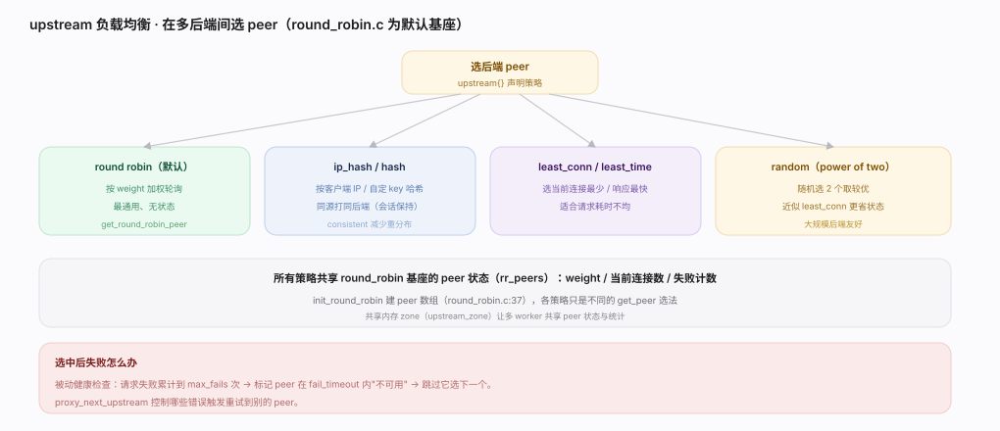
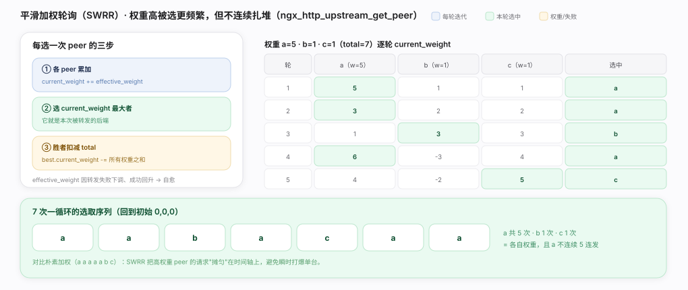
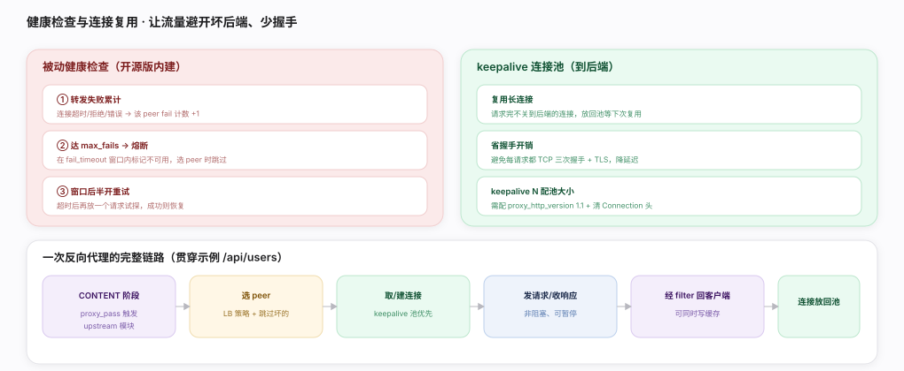
nginx/src（commit 9e32c636，nginx 1.31.3）。ngx_http_upstream_get_peer round_robin.c:811，current_weight += effective_weight :884）/ip_hash/hash（会话保持）/least_conn/least_time/random 各是 round_robin 基座上不同的 get 回调，peer 状态经共享内存 zone 跨 worker 共享；被动健康检查按 peer->fails++（:1059）达 max_fails/fail_timeout 熔断坏 peer、半开重试恢复，ngx_http_upstream_next（ngx_http_upstream.c:4591）换 peer、keepalive 连接池（keepalive_module.c:205/278）复用到后端的长连接省握手——共同实现高可用、低延迟的后端分流。zone 让 peer 状态跨 worker 一致（否则各 worker 各判健康）。keepalive + HTTP/1.1 到后端，显著降延迟与握手开销。max_fails/fail_timeout 按后端稳定性调，避免误熔断或迟熔断。proxy_next_upstream，防重试重复副作用。peer->fails++）；主动探测在商业版或第三方模块。proxy_set_header Connection ""。current_weight += effective_weight，:884）保证分布均匀不扎堆。| 失败/边界场景 | 处理机制 | 锚点 |
|---|---|---|
| 全部 peer 不可用 | 遍历完所有 peer 仍失败返 502；全被标坏时临时重置尝试而非永久拒服 | ngx_http_upstream_next:4591 |
| 重试放大 | proxy_next_upstream 含非幂等方法（POST）可致重复副作用；用 _tries/_timeout 限重试次数与总时长 | — |
| keepalive 连接失效 | 复用连接已被后端关时发请求遇 RST，upstream_next 重连换 peer；异常连接不入池直接关 | ngx_http_upstream_free_keepalive_peer:278 |
| 不配 zone 统计漂移 | 无 zone 时 peer 计数各 worker 私有、熔断判定不一致——生产必配共享内存 zone | — |
| 权重饥饿 | 权重为 0 或长期熔断的 peer 自动不选，恢复后 current_weight 从 0 重新爬升、避免恢复瞬间被打爆 | — |
| 指令 | 作用 | 锚点 |
|---|---|---|
upstream name { server ...; } | 定义后端池 | http/ngx_http_upstream_round_robin.c:37 |
server ... weight= max_fails= fail_timeout= | peer 参数与健康检查阈值 | http/ngx_http_upstream_round_robin.c:194 |
ip_hash / hash / least_conn / random | 选负载均衡策略 | http/modules/ngx_http_upstream_ip_hash_module.c |
keepalive N | 到后端的长连接池大小 | http/modules/ngx_http_upstream_keepalive_module.c:205 |
proxy_next_upstream | 何种错误重试到下一 peer | http/ngx_http_upstream.c:4591 |
zone name size | 共享内存，多 worker 共享 peer 状态 | http/modules/ngx_http_upstream_zone_module.c |
![缓存查找流程]()
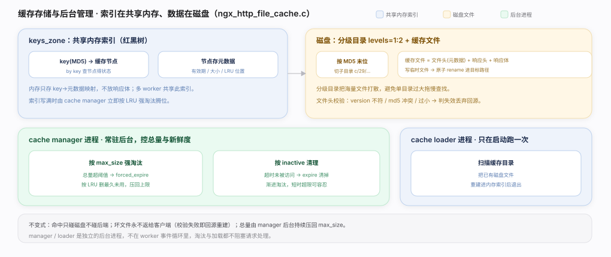
nginx/src（commit 9e32c636，nginx 1.31.3）。ngx_md5_final ngx_http_file_cache.c:258）缓存到磁盘：ngx_http_file_cache_open（:265）查共享内存红黑树（ngx_http_file_cache_lookup :1029）判 HIT/EXPIRED/MISS，命中直读磁盘文件返回、未命中回源并边返边写缓存文件（proxy_cache_lock 防并发击穿），依 Cache-Control/proxy_cache_valid 定 TTL；索引在共享内存、数据在磁盘分级目录，cache manager（:2022）按 max_size/inactive 后台 LRU 淘汰、cache loader（:2109）启动时载入索引——用磁盘换后端压力。keys_zone 要够大（每 MB 约存 8000 个 key），否则索引满 LRU 淘汰频繁。proxy_cache_lock on 防热点 key 并发回源打垮后端。proxy_cache_use_stale + updating 提升后端抖动时可用性。levels 分级避免单目录文件过多。proxy_cache_lock。ngx_http_file_cache_loader（:2109）只在启动时跑一次载入索引；日常淘汰是 manager 的活。| 失败/边界场景 | 处理机制 | 锚点 |
|---|---|---|
| 缓存文件损坏/版本不符 | 读到 version mismatch(:570)/md5 collision(:576)/too small(:562) 判失效、删除并回源，绝不返坏数据 | ngx_http_file_cache_open:265 |
| 磁盘文件被外部删除 | 索引仍在但 open 失败（:373 记 error），退化为 MISS 回源并重建 | ngx_open_cached_file:359 |
| keys_zone 索引满 | 内存索引写不下新 key 时 manager 立即按 LRU 强淘汰腾位，新请求不命中但服务不中断 | ngx_http_file_cache_forced_expire:1761 |
| max_size 超限 | manager 后台持续 LRU 淘汰把总量压回阈值；渐进淘汰、短时超限可容忍 | — |
| 回源自身失败 | MISS 回源遇后端错误时，配 proxy_cache_use_stale 可返回过期旧缓存兜底，否则透传后端错误 | — |
| 指令 | 作用 | 锚点 |
|---|---|---|
proxy_cache_path ... keys_zone= levels= max_size= inactive= | 缓存目录、内存索引、容量、失效 | http/ngx_http_file_cache.c:994 |
proxy_cache zone | 该 location 启用缓存 | http/ngx_http_file_cache.c:265 |
proxy_cache_key | 自定义 key（默认含 scheme/host/uri，MD5） | http/ngx_http_file_cache.c:258 |
proxy_cache_valid code time | 各状态码的缓存 TTL | http/ngx_http_file_cache.c:1029 |
proxy_cache_lock on | 防击穿：并发 MISS 只回源一次 | — |
proxy_cache_use_stale | 后端异常时返旧缓存 | — |
| cache manager / loader | 后台 LRU 淘汰 / 启动载入索引 | http/ngx_http_file_cache.c:2022/2109 |
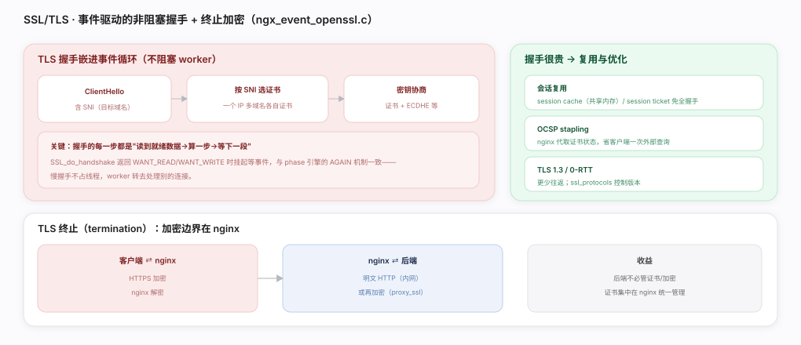
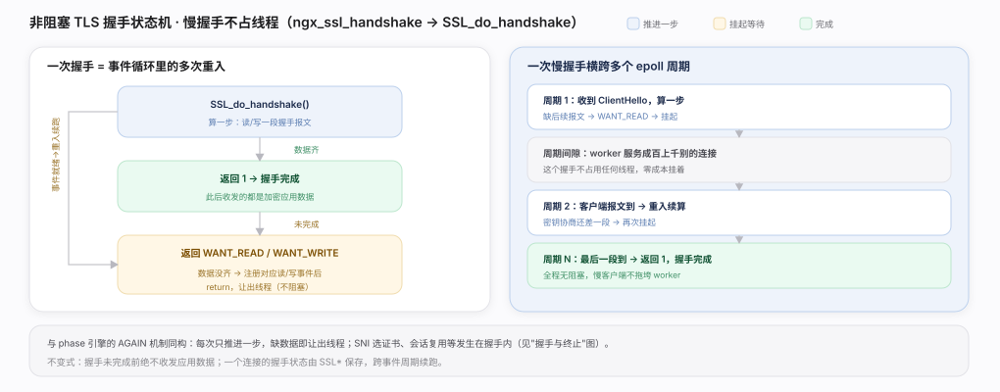
nginx/src（commit 9e32c636，nginx 1.31.3，event/ngx_event_openssl.c）。ngx_ssl_handshake（ngx_event_openssl.c:2201）调 SSL_do_handshake（:2219），ClientHello 带 SNI → 回调 ngx_http_ssl_servername（ngx_http_request.c:885）+ ngx_http_find_virtual_server（:2491）选证书 → 密钥协商，返回 WANT_READ/WRITE 时像 phase 引擎的 AGAIN 一样挂起让出线程；握手昂贵故用 session cache/ticket 复用、OCSP stapling（:2214）、TLS 1.3 优化；nginx 作 TLS 终止点——对客户端 HTTPS 加密、对后端明文（或 proxy_ssl 再加密），把证书与加密集中管理、卸载后端负担。ssl_session_cache shared:... + tickets，握手复用降 CPU 与延迟。ssl_stapling on 提升客户端首次连接速度。SSL_do_handshake（:2219）返回 WANT_READ/WRITE 时让出线程。ngx_http_find_virtual_server（:2491）回退默认证书告警。| 失败/边界场景 | 处理机制 | 锚点 |
|---|---|---|
| 握手失败 | SSL_do_handshake 返错（协议不符/套件不匹配/证书校验失败）记 SSL error 日志、关连接，绝不半开挂起 | ngx_ssl_handshake event/ngx_event_openssl.c:2201 |
| SNI 未匹配 | 找不到对应 server_name 回退该 listen 的默认 server 证书，可能触发客户端证书名不符告警——每域名都配证书 | ngx_http_find_virtual_server http/ngx_http_request.c:2491 |
| OCSP 取回失败 | stapling 拉取失败/过期时不阻断握手、只是不下发 stapling（客户端自校验），容错返回 | ngx_ssl_ocsp_validate openssl.c:2214/:2267 |
| 0-RTT 重放 | TLS 1.3 early data 可被重放，nginx 标记 Early-Data 头，非幂等请求应在后端拒绝或校验 | — |
| 私钥加载失败 | 证书/私钥不匹配或文件缺失直接启动失败、不带病运行 | ngx_ssl_create event/ngx_event_openssl.c:306 |
| 指令 | 作用 | 锚点 |
|---|---|---|
ssl_certificate / ssl_certificate_key | 证书与私钥（可多组按 SNI） | event/ngx_event_openssl.c:306 |
ssl_protocols / ssl_ciphers | 允许的协议版本与加密套件 | event/ngx_event_openssl.c:306 |
server_name（SNI 选证书） | 按 ClientHello SNI 切虚拟主机 | http/ngx_http_request.c:885/2491 |
ssl_session_cache / ssl_session_tickets | 会话复用 | event/ngx_event_openssl.c |
ssl_stapling on | OCSP stapling | event/ngx_event_openssl.c:139/2214 |
proxy_ssl_* | 到后端再加密 | http/modules/ngx_http_proxy_module.c |
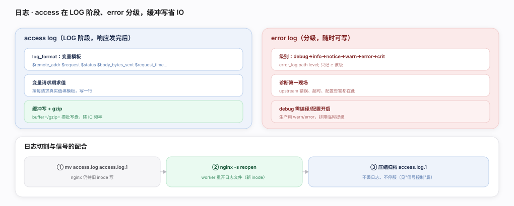
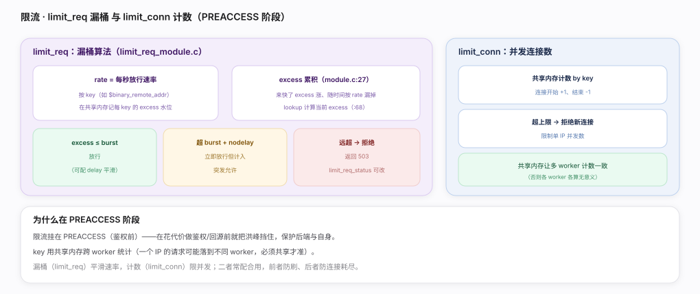
nginx/src（commit 9e32c636，nginx 1.31.3）。ngx_http_log_handler（log_module.c:254）在 LOG 阶段按 log_format 变量模板缓冲写盘（超缓冲才 ngx_http_log_write :98 刷）、error log 分级记录诊断现场、日志切割靠 mv + reopen 不丢不停服；限流在 PREACCESS 阶段抢先挡洪峰——limit_req 漏桶 ngx_http_limit_req_lookup（:405）按 excess = lr->excess - rate*ms/1000 + 1000（:456）算水位、超 burst 返 503，limit_conn（conn++ :286）共享内存计数限并发，二者的 key 都用共享内存跨 worker 统计才准确。buffer=（如 32k）+ gzip，高流量下大幅降磁盘 IO。$binary_remote_addr（比字符串省内存）。burst + nodelay 允许合理突发又不排队延迟。limit_req_dry_run on 观测再启用。*_zone（共享内存）跨 worker 统计。:328 的攒批逻辑）。:456），比较时对应 rate×1000。| 失败/边界场景 | 处理机制 | 锚点 |
|---|---|---|
| 共享内存 zone 耗尽 | key 太多撑爆 zone 时 LRU 淘汰最旧节点（ngx_queue_remove+插头）腾位；老 key 被挤、精度降但不崩 | ngx_http_limit_req_lookup:441-443 |
| 拒绝的返回码 | 超限走 NGX_HTTP_LIMIT_REQ_REJECTED(:15) 返 503；nodelay 突发立放但计水位，delay= 排队平滑 | — |
| dry_run 模式 | limit_req_dry_run on 命中 ..._REJECTED_DRY_RUN(:17) 只记日志不真拒，用于上线前观测阈值 | — |
| 单 worker 计数无意义 | 不配 *_zone 时限流退化为进程内、多 worker 完全不准——必须用 zone | — |
| 日志写盘失败 | 磁盘满时写失败记 error（每分钟限频告警），不阻塞请求处理 | ngx_http_log_write:98 |
| 指令 | 作用 | 锚点 |
|---|---|---|
log_format / access_log path fmt buffer= gzip= | 日志格式与缓冲/压缩写 | http/modules/ngx_http_log_module.c:254 |
error_log path level | 错误日志与级别 | core/ngx_log.c |
limit_req_zone key zone= rate= + limit_req zone= burst= nodelay | 请求速率漏桶 | http/modules/ngx_http_limit_req_module.c:195/405 |
limit_conn_zone key zone= + limit_conn zone= N | 并发连接数限制 | http/modules/ngx_http_limit_conn_module.c:180/286 |
limit_req_status / limit_conn_status | 超限返回码 | http/modules/ngx_http_limit_req_module.c:15 |